Testing background point generation in modleR
Andrea Sánchez-Tapia & Sara Mortara
2020-10-27
Source:vignettes/articles/buffer_and_randomPoints.Rmd
buffer_and_randomPoints.RmdThis workflow tests background point generation in modleR. We perform tests with different types of buffer and different code options to sample pseudoabsences inside a geographic buffer. Later, we explore how different methods for sampling pseudoabsences result on different model predictions.
To run this example you will need modleRand the additional packages rJava, raster, and dplyr. To check if they are already installed and install eventually missing packages run the code below.
packages <- c("rJava", "raster", "dplyr", "devtools") instpack <- packages[!packages %in% installed.packages()] if (length(instpack) > 0) { install.packages(packages[!packages %in% installed.packages()]) }
If you don’t have modleR installed, run:
#devtools::install_github("Model-R/modleR", ref = "master") #library(modleR) devtools::load_all()
Then, load all required packages.
The example data set
We use a standard dataset inside the package modleR. First, from example_occs object we select only data from one species Abarema langsdorffii and create one training set (70% of the data) and one test set (30% of the data) for the data.
## Creating an object with species names especies <- names(example_occs)[1] # Selecting only coordinates for the first species coord1sp <- example_occs[[1]] head(coord1sp)
## sp lon lat
## 343 Abarema_langsdorffii -40.615 -19.921
## 344 Abarema_langsdorffii -40.729 -20.016
## 345 Abarema_langsdorffii -41.174 -20.303
## 346 Abarema_langsdorffii -41.740 -20.493
## 347 Abarema_langsdorffii -42.482 -20.701
## 348 Abarema_langsdorffii -40.855 -17.082dim(coord1sp)
## [1] 104 3# Subsetting data into training and test # Making a sample of 70% of species' records set <- sample(1:nrow(coord1sp), size = ceiling(0.7 * nrow(coord1sp))) # Creating training data set (70% of species' records) train_set <- coord1sp[set,] # Creating test data set (other 30%) test_set <- coord1sp[setdiff(1:nrow(coord1sp),set),]
Now let’s the check our data points. We plot the traning and test data sets with the first axis of the environmental PCA data from the object example_vars.
# selecting only the first PCA axis predictor <- example_vars[[1]] # transforming the data frame with the coordinates in a spatial object pts <- SpatialPoints(coord1sp[,c(2,3)]) # ploting environmental layer plot(predictor, legend = FALSE) # adding training data set in red points(train_set[,2:3], col = "red", pch = 19) # adding test data set in blue points(test_set[,2:3], col = "blue", pch = 19)

Inclusion buffers (distance-base or user-defined)
We define a buffer as a maximum distance or area, within which pseudoabsences will be sampled. On the other hand, a filter excludes areas too close to the occurrence points (in the environmental or the geographic space), in order to control overfitting.
Here, for all types of buffer and filters, we demonstrate how function create_buffer() works by running it and then generating the background values with randomPoints() from package dismo.
In modleR, we implemented:
- User-defined buffer — Allows the user to provide their own shapefile as available area (M) to sample pseudoabsences
- Geographic distance buffers — Instead of using a specific polygon for the buffer construction, it samples pseudoabsences according to several options:
-
max: the maximum distance between any two occurrence points -
mean: the mean distance between all occurrence points -
median: the median of the pairwise distance between occurrence points -
distance: the user can specify a particular distance to be used as buffer width - in raster units
-
- Distance exclusion filters:
- In the geographic space, using parameter
min_geog_dist. - In the environmental space, using
min_env_distand setting adist_type
- In the geographic space, using parameter
Figure 1 explains the possible combinations of these two kinds of buffers.

Inclusion buffer with maximum distance max
In this example, we use buffer_type = "maximum" to generate our first object.
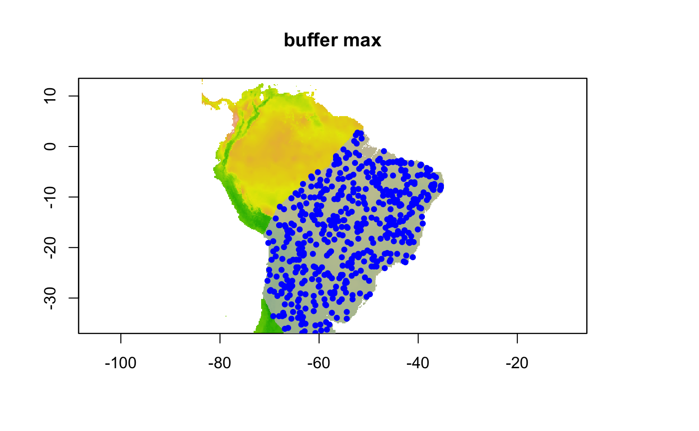
Inclusion buffer with a specific distance
In this example we specify a particular distance from each point to sample pseudoabsences inside the buffer. We use buffer_type = "distance" and dist_buf = 5. Be aware that dist_buf must be set when using a distance buffer.
Inclusion buffer within a user-defined shapefile (user and buffer_shape)
In this example we specify a shapefile that we use as the buffer. Please note that a buffer_shape must be included in order to use this buffer.
#myshapefile <- rgdal::readOGR("./data/myshapefile.shp") myshapefile <- rgdal::readOGR("./data/myshapefile.shp")
## OGR data source with driver: ESRI Shapefile
## Source: "/Users/andreasancheztapia/Documents/1_modleR/1_repos_modleR/1_modleR/vignettes/articles/data/myshapefile.shp", layer: "myshapefile"
## with 1 features
## It has 1 fieldsbuf.user <- create_buffer(occurrences = coord1sp[,c(2,3)], predictors = predictor, buffer_type = "user", buffer_shape = myshapefile) # using buf.dist to generate 500 pseudoabsences buf.user.p <- dismo::randomPoints(buf.user, n = 500, excludep = TRUE, p = pts) # plotting environmental layer with background values ## environmental layer plot(predictor, legend = FALSE, main = "user-defined buffer") ## adding buff plot(buf.user, add = TRUE, legend = FALSE, col = scales::alpha("grey", 0.8), border = "black") ## adding buf.user.p points(buf.user.p, col = "blue", pch = 19, cex = 0.7)
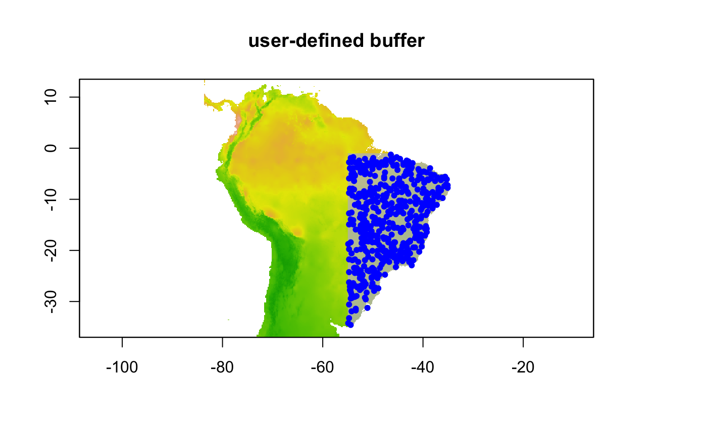
Exclusion filters in the geographical and environmental spaces
Geographic distance filter
The simplest exclusion filter is based on the geographical distance, in the units of the predictor rasters (here, degrees)
geog.filt <- create_buffer(occurrences = coord1sp[,c(2,3)], predictors = predictor, buffer_type = "none", min_geog_dist = 1) # using buf.dist to generate 500 pseudoabsences geog.filt.p <- dismo::randomPoints(geog.filt, n = 500, excludep = TRUE, p = pts) # plotting environmental layer with background values ## environmental layer plot(predictor, legend = FALSE, main = "geographic filter") ## adding buff plot(geog.filt, add = TRUE, legend = FALSE, col = scales::alpha("grey", 0.8), border = "black") ## adding buf.user.p points(geog.filt.p, col = "blue", pch = 19, cex = 0.7) points(coord1sp[,c(2,3)], col = "red", pch = 19, cex = 0.7)
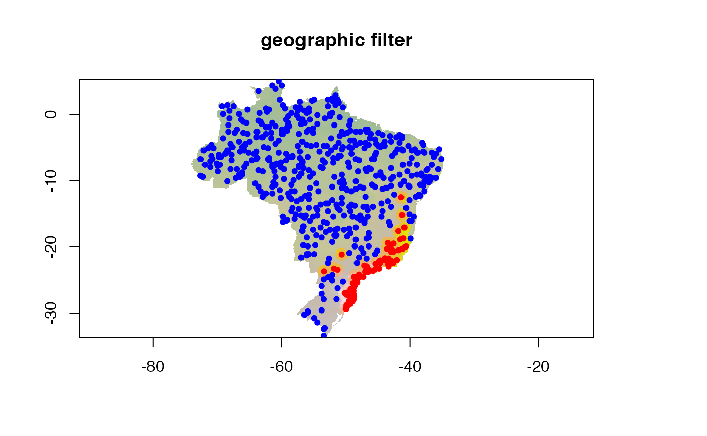
Environmental distance filter
The second kind of filter is based on the euclidean environmental distance. This can be either the euclidean distance to the environmental centroid of the occurrences (env_distance = "centroid") or the minimum euclidean distance to any occurrence point (env_distance = "mindist").
An example with centroid, taking away 10% of the closest points
predictor <- example_vars buf.env <- create_buffer(occurrences = coord1sp[,c(2,3)], predictors = predictor, env_filter = TRUE, env_distance = "centroid", min_env_dist = 0.1 ) # using buf.env to generate 500 pseudoabsences buf.env.p <- dismo::randomPoints(buf.env, n = 500, excludep = TRUE, p = pts) # plotting environmental layer with background values ## environmental layer plot(predictor[[1]], legend = FALSE, main = "environmental distance filter (centroid)") ## adding buff plot(buf.env[[1]], add = TRUE, legend = FALSE, col = scales::alpha("grey", 0.8), border = "black") ## adding buf.user.p points(coord1sp[,c(2,3)], col = "red", pch = 19, cex = 0.7) points(buf.env.p, col = "blue", pch = 19)
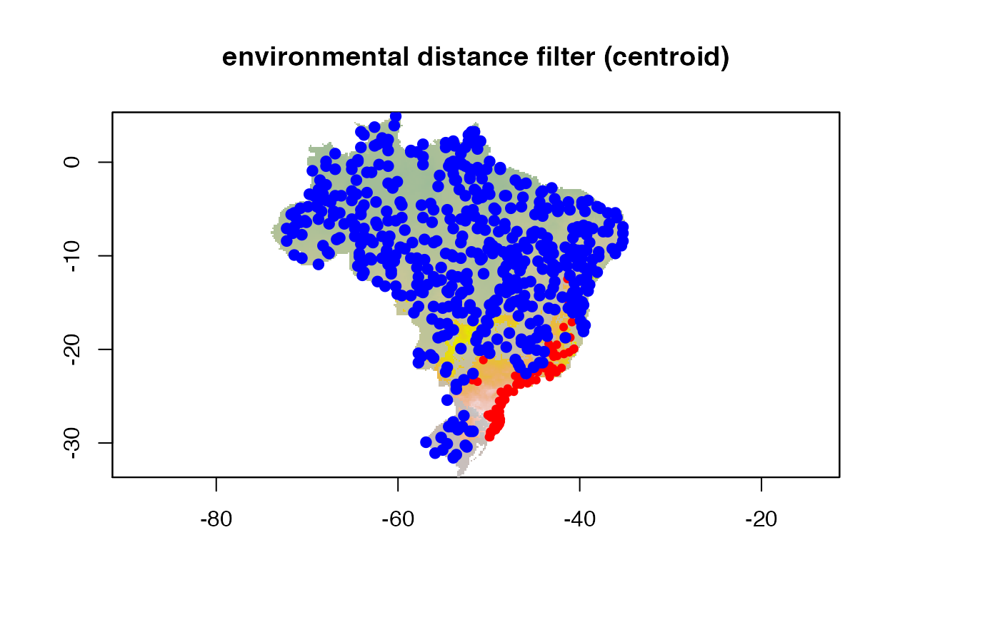
An example with mindist, taking away 10% of the closest points
predictor <- example_vars buf.env <- create_buffer(occurrences = coord1sp[,c(2,3)], predictors = predictor, env_filter = TRUE, env_distance = "mindist", min_env_dist = 0.1 ) # using buf.env to generate 500 pseudoabsences buf.env.p <- dismo::randomPoints(buf.env, n = 500, excludep = TRUE, p = pts) # plotting environmental layer with background values ## environmental layer plot(predictor[[1]], legend = FALSE, main = "environmental distance filter (mindist)") ## adding buff plot(buf.env[[1]], add = TRUE, legend = FALSE, col = scales::alpha("grey", 0.8), border = "black") ## adding buf.user.p points(coord1sp[,c(2,3)], col = "red", pch = 19, cex = 0.7) points(buf.env.p, col = "blue", pch = 19)
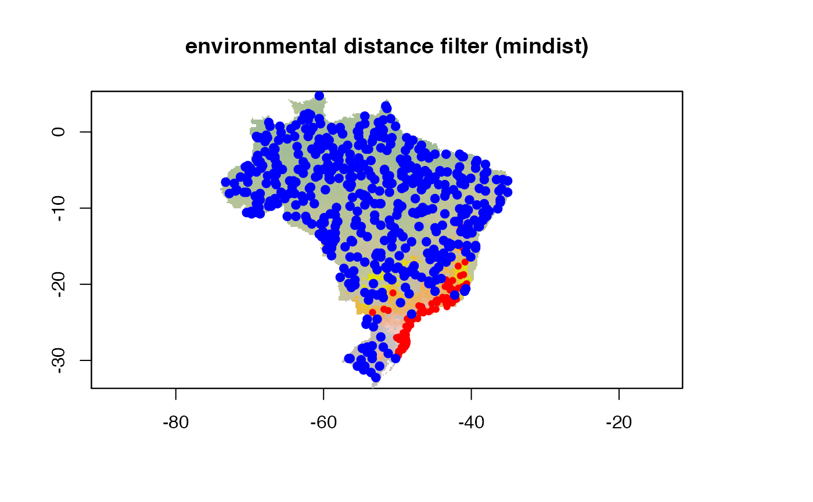
Superimposing buffers and filters
Buffers and filters can be used simultaneously. Here is an example with a maximum distance buffer and a 5% centroid environmental filter:
buf.env <- create_buffer(occurrences = coord1sp[,c(2,3)], predictors = predictor, buffer_type = "maximum", env_filter = TRUE, env_distance = "centroid", min_env_dist = 0.05) # using buf.env to generate 500 pseudoabsences buf.env.p <- dismo::randomPoints(buf.env, n = 500, excludep = TRUE, p = pts) # plotting environmental layer with background values ## environmental layer plot(predictor[[1]], legend = FALSE, main = "environmental distance buffer x maximum distance buffer") ## adding buff plot(buf.env, add = TRUE, legend = FALSE, col = scales::alpha("grey", 0.8), border = "black") ## adding buf.user.p points(buf.env.p, col = "blue", pch = 19)
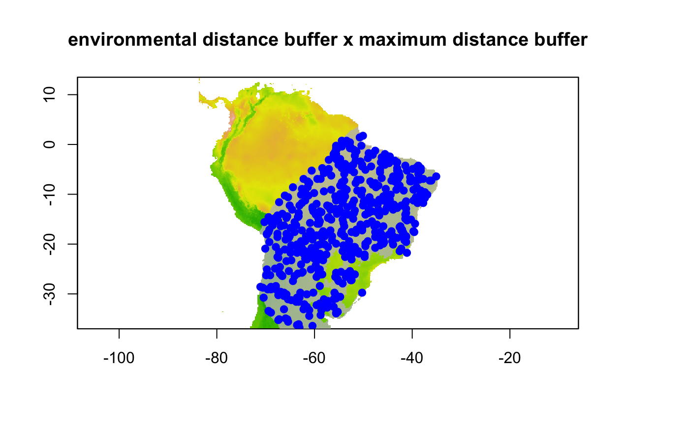
Using function setup_sdmdata()
So far, the examples have been using function create_buffer() and sampling directly. In modleR, however, function setup_sdmdata() can take all arguments and execute the pseudoabsence sampling, as well as data partitioning.
The following examples show the use of function setup_sdmdata() in several combinations of buffers and filters.
#maxbuff + mindist m <- setup_sdmdata(species_name = especies[1], occurrences = coord1sp[, -1], predictors = example_vars, models_dir = "./buffer_res/mindist_maxdist", buffer_type = "maximum", min_geog_dist = 3, clean_dupl = TRUE, clean_nas = TRUE) knitr::include_graphics("./buffer_res/mindist_maxdist/Abarema_langsdorffii/present/data_setup/sdmdata_Abarema_langsdorffii.png")
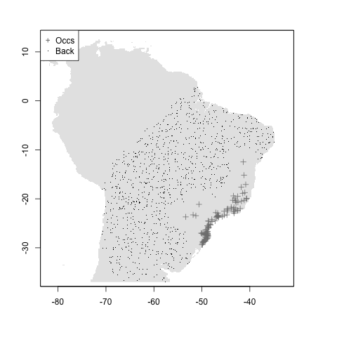
#mean + mindist m <- setup_sdmdata(species_name = especies[1], occurrences = coord1sp[, -1], predictors = example_vars, models_dir = "./buffer_res/mindist_meandist", buffer_type = "mean", min_geog_dist = 3, clean_dupl = TRUE, clean_nas = TRUE) knitr::include_graphics("./buffer_res/mindist_meandist/Abarema_langsdorffii/present/data_setup/sdmdata_Abarema_langsdorffii.png")
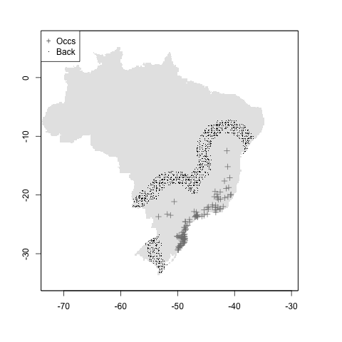
#median + mindist m <- setup_sdmdata(species_name = especies[1], occurrences = coord1sp[, -1], predictors = example_vars, models_dir = "./buffer_res/mindist_mediandist", buffer_type = "median", min_geog_dist = 3, clean_dupl = TRUE, clean_nas = TRUE) knitr::include_graphics("./buffer_res/mindist_mediandist/Abarema_langsdorffii/present/data_setup/sdmdata_Abarema_langsdorffii.png")
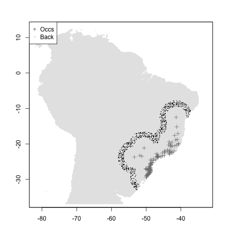
#geog.distance + mindist m <- setup_sdmdata(species_name = especies[1], occurrences = coord1sp[, -1], predictors = example_vars, models_dir = "./buffer_res/mindist_distance", buffer_type = "distance", dist_buf = 7, min_geog_dist = 3, clean_dupl = TRUE, clean_nas = TRUE ) knitr::include_graphics("./buffer_res/mindist_distance/Abarema_langsdorffii/present/data_setup/sdmdata_Abarema_langsdorffii.png")
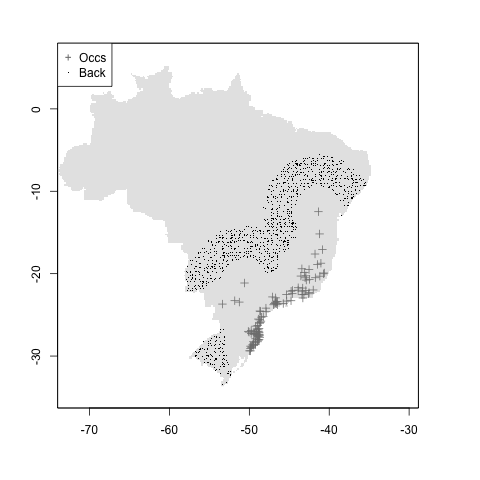
#user + mindist myshapefile <- rgdal::readOGR("./data/myshapefile.shp")
## OGR data source with driver: ESRI Shapefile
## Source: "/Users/andreasancheztapia/Documents/1_modleR/1_repos_modleR/1_modleR/vignettes/articles/data/myshapefile.shp", layer: "myshapefile"
## with 1 features
## It has 1 fieldsm <- setup_sdmdata(species_name = especies[1], occurrences = coord1sp[, -1], predictors = example_vars, models_dir = "./buffer_res/mindist_usrshp", buffer_type = "user", buffer_shape = myshapefile, min_geog_dist = 3, clean_dupl = TRUE, clean_nas = TRUE) knitr::include_graphics("./buffer_res/mindist_usrshp/Abarema_langsdorffii/present/data_setup/sdmdata_Abarema_langsdorffii.png")
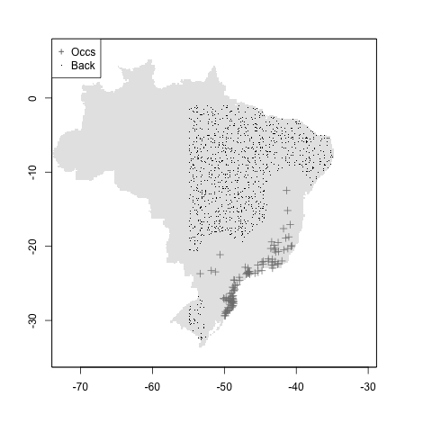
#ENV + mindist m <- setup_sdmdata(species_name = especies[1], occurrences = coord1sp[, -1], predictors = example_vars, models_dir = "./buffer_res/envdist_usrshp", buffer_type = "mean", env_filter = TRUE, min_env_dist = 0.3, clean_dupl = TRUE, clean_nas = TRUE) knitr::include_graphics("./buffer_res/envdist_usrshp/Abarema_langsdorffii/present/data_setup/sdmdata_Abarema_langsdorffii.png")
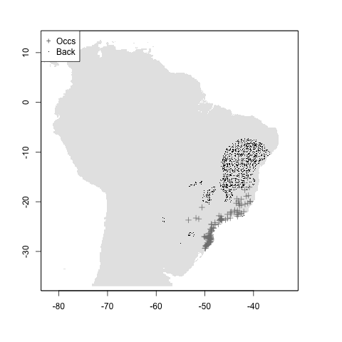